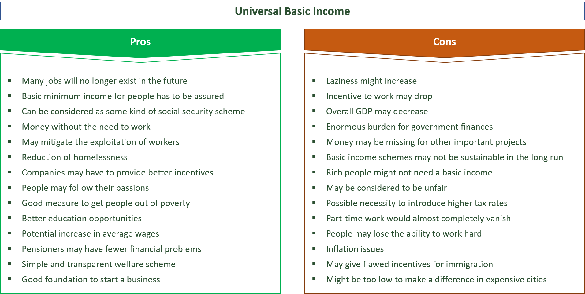

I got this list from Google Images. It's a good checklist though some may quibble with some of it.Michael Haines, who has previously posted on Troppo, is campaigning for universal income funded from the adoption of sovereign money — which would yield a large amount of seigniorage like revenue to government. Geoff Croker is campaigning for something similar from the UK. I responded to this by email which I reproduce here.
As far as I understand it, you're both arguing that you generate all this free money with sovereign money and then you spend it on UBI. They're two separate policies that need to stand or fall on their own merits.
Thus for instance, I'm in favour of green taxes and wealth taxes and some move towards greater sovereign money (I don’t think I'm so clever that I know what would happen with full sovereign money so I'd like to take some substantial steps in that direction and then reassess). But the case for each is a product of their cost-effectiveness, distributional impacts considered in the context of the political economy of each measure. (If you're not sure what I mean, the last two dot points of this post relate to political economy questions).
The case for UBI likewise needs to be made on the merits.
We have something quite like a UBI now but with work tests. Milton Friedman's argument for UBI was based on getting rid of the moralism and bureaucracy of such tests.
Others on the left of centre are more concerned with the stigmatisation of welfare. I have to say that that has been what has been the strongest influence tempting me to switch from agnosticism to support of a UBI. But this is very difficult because it is easy to imagine a situation in which, for want of targeting, the UBI is sufficiently expensive that, in the upshot of electoral competition the basic payment available via UBI is made lower than it would be for the dole.
Both on the right and left, most people arguing for a UBI have accepted that it would come with costs. Those costs include
- less targeting leading to higher rates of taxation
- removing the need to 'work'. This will be a boon to many and to the extent to which it is, to society. But it will also shear away the incentive to work which is, in the minds of many, a foundation of the social contract and the quid pro quo for community support to the destitute. The hoi polloi are highly suspicious of doing away with this foundation, both in terms of its economic efficacy and its social ethics. This is relevant to:
- the economics of how a UBI will turn out — considered broadly — whether it raises or lowers wellbeing (considered broadly) in the long run. I have at least as much respect for the hoi polloi's suspicions of it underwriting an indolent underclass as I have for my own more optimistic view. I don't know.
- the politics of a UBI, both as to its long-term sustainability and the rate at which it's paid.
So I remain agnostic
I've made these points previously. But they never turn up as central to your thinking about UBI. You're an advocate for UBI and you've made up your mind. That's your prerogative and it's good that we have advocates in the community arguing for different things I guess. But with your stuff and with most of the other stuff I see advocating a UBI, it simply elides the central issues I've outlined above.
Nich, thanks for posting this. I'm glad you remain agnostic :) I don't think we are as far apart as you suppose. I believe I have refined my understanding of the challenges as a result of our discussions :) You're right, the case for a UBI should be made on its merits, before we worry about how it is funded. Geoff and I emphasize different justifications for the UBI. His focus is the impact of technology driving down the share of wages, requiring people to borrow more to sustain their standard of living. Which I agree is a problem. He is proposing to replace this debt with sovereign money. My own view is that the problem goes much deeper. Rationale for UBI Once, it was the birthright of every person to live off the land. Since the advent of property rights, money, and the system of paid work, this is no longer possible. As a result... "Humans are now the only species that need money to survive" (Scott Santens). While this system has delivered huge benefits for the majority, it has left a substantial minority destitute: those who cannot do paid work, that also have no savings or family support (12–14% of the population, around 3.2 million people in Australia, mostly single women with kids, the aged and disabled, and those between jobs). It’s a System Problem: Without money, people are invisible to the market, so the market can never respond. This is bad for them, bad for business, and ultimately, bad for society. Yet, we have unlimited money: we create the stuff. In Australia at least, we also have the resources and organizational capability to meet everyone’s basic needs (and much more). Welfare does not suffice as it is deliberately set below the poverty line to encourage people who can work to take the available jobs. Raising welfare is not the answer. As the higher the rate, the more rational (not laziness) it is for people to take the benefit in lieu of a low-paid job (the Welfare Trap). A UBI Offers a System Solution: A Universal Basic Income restores each person’s birthright, by providing the money required to access the resources they need to survive. It avoids the welfare trap because people do not lose their UBI if they take on paid work. It provides a floor to stand on, not a ceiling to achievement. Pilots from around the world show that with enough to live on, people focus on making their lives and the lives of their dependents better, with little adverse impact on the labour market. In general, women spend more time looking after their children, while others take on more education and training - hardly the worst situation. Phased Introduction You caution that no one knows what the real impact of a UBI may be. And I agree. Taking it slow is exactly the approach I'm recommending. None of us know what the impact will really be on inflation, the labour market, and behaviour. Inflation may skyrocket, no one may want to work, and all 18 year olds might retire to their bedrooms to play computer games, or take a share house and party-away their UBI! The recommendation is to start with just $10/week, increasing it at the rate of $25/week every quarter... and see what happens. The aim would be to get to the Henderson Poverty line over 5 years. This is currently around $500/week. $10 is enough for food for a day for someone in poverty, so it is meaningful from the start. But it is not going to break the economy, or turn everyone into indolent sloths. In fact, in today's environment of rising inflation, a gradual increase in the UBI could be a circuit breaker, providing an effective wage rise for workers, without cost to employers (thus avoiding 'cost push' inflation), as well as benefiting those without a job, who are also suffering from rising prices. By taking it slow, we also give the supply chain time to adapt to the new pattern of demand as it emerges, without causing shortages that drive inflation. And, importantly, it will let us see what really happens, without having to theorise; all with little risk. If the negatives appear to outweigh the positives, we can halt any further increase until the problems are countermeasured. The countermeasure may be as simple as leaving the rate where it is until the job market sorts itself out, perhaps with an interest rate rise to help things along. Targeting the Universal Basic Income This sounds like an oxymoron... but it's not :). Despite being paid to every Adult, the payment would be targeted to those who need it most by: · Including the UBI as income when determining welfare payments, and by · Recovering the UBI on a sliding scale from earned income. Above AUD80,600 of income, the whole UBI would be recovered. Rationale for Paying it Universally but Targeting the Net Benefit: · Targeting significantly reduces the amount of money required to fund the UBI, while making sure it goes to those who need it most. By treating the UBI as income for welfare, it also means no person can be worse off. While welfare will 'naturally' phase out as the rate is raised. · Paying it and recovering it may seem in efficient. However, it has the major psychological benefit of making the payment universal (so no stigma). It also acts like ‘basic income insurance’. Just because you have an income today, does not mean you can't lose it tomorrow. People lose their income for all sorts of reasons every day: divorce, sickness, a fall in business, natural disasters, disagreements with the boss, their car breaks down and they can't afford to get it fixed so they can't get to work, the algorithm denies them shifts, etc. The UBI provides assurance that if you ever lose all or part of your income, the UBI continues to be paid - no need to apply, no delay. No one looking over your shoulder to see if you 'qualify', relieving people of the burden of 'meeting mutual obligations', so they are free to do what they know is needed to find themselves a job again (as soon as they can), while caring themselves and their family, as circumstances require. And, no need to tell anyone when you get a job, or how much you are earning (except the tax man, as normal). Again removing 'stigmatization'. Making an Informed Decision about Changes to our Economic System
Plainly, new money drives new activity as it is spent into the economy. If we are to make informed decisions about changes to our economic system, it is therefore vital to understand how new money gets created and allocated. Unfortunately, most people (even a few economists I have talked with) don't understand that:
However, there is no natural law that says bank borrowings are the only way new money must be created and allocated. Given this is the reality… Funding the UBI It is proposed to leave the tax system untouched, so again no one can complain that they are disadvantaged. Nor would the UBI be funded by debt, or by taking money from other government programs. Instead, it would be funded through the issue of new Sovereign Money. I'm happy if it is decided to fund the net UBI out of tax, rather using Sovereign Money. I just happen to think that using new money is the better path, simply because it requires no changes to any other programs or systems. · The UBI would become the 'base' method for injecting new money into the economy. · By increasing interest rates, we can suppress some bank borrowing. (Ideally, bank borrowing aimed at increasing capacity to meet basic needs should be exempt from any rate rises, so we don’t dampen supply). · This will give us the ‘monetary space’ to inject some new money into the economy via the UBI, without causing excessive inflation. In doing this, overall economic activity should remain at full capacity, but more would be directed to meeting basic needs, and less on other spending. Like Bank Lending, a UBI is Not Government Spending: Bank lending occurs under government auspices, but we don’t regard the money created, and spent into the economy by borrowers, as ‘government spending’. In the same way, the money created by the Reserve Bank, and allocated to all citizens as UBI, should not be regarded as ‘government spending’. It is truly spending by the people, for the people — individually. Three Ways to Inject New Money into the Economy We would then be left with a system that injects new money into the economy in three ways:
Given we have created a system that requires people to have money to survive, equity would seem to demand that the system ensures basic needs are met above all else. Four Income Sources It would also result in each person have four potential sources of income;
Using UBI to Balance the Labour Market: Once the UBI reaches the Poverty Line, it can become a new more powerful tool to help keep the labour market in dynamic balance. This can be achieved because each person has a different propensity to take on paid work, depending on their age, commitments, needs, and other income, etc. As automation and virtualization result in a fall in demand for workers, the UBI can be increased. As it is raised, individuals will make their own choice to stop looking for work, or to drop out of paid work, to live on the UBI and any other passive income they may have. Once the rate at which jobs are being filled begins to push out beyond ‘standard’ recruitment times, this would signal the need to hold the UBI rate until the market is re-balanced. It would never be perfect, but it should facilitate the transition to a ‘new normal’ over time. UBI could be Transformative A UBI has the potential to eliminate systemic poverty, along with the fear of falling into poverty (for those now living pay cheque to pay cheque). There are 59 identifiable benefits for individuals, business, the economy, the government and the people in general, as listed the links below: 24 Benefits for Individuals 16 Benefits for Business and the Economy19 Benefits for Government and the People Overall, it should result in much less anger and fear in the community, and much more productive effort, less crime, and better health. Though, the only way to prove this is to do it... starting small. No amount of theorising can demonstrate the reality.
Thanks Michael Would I be right in assuming that there's not a word in your reply that addresses in any concrete way any of my concerns that a UBI may not be the most effective way to address your laudable goals — for instance by comparing a UBI to other policies to achieve similar ends?
Milton Freidman was a great believer in UBI although he called it by another name. I remain too old and lazy to remember what his arguments were.
Can I suggest that the extra cost of the UBI is taken into account when comparing it with other things too. Notably, as far as I'm aware, the Australia pension scheme is fairly efficient and fairly progressive (indeed welfare in general is -- which would be even more so if not for political things that would be hard to get up in a UBI also, e.g., giving 18 year olds that don't work $500 per week). So the extra cost would be an opportunity cost, and making the scheme less progress would be too (I'd like to see both considered).
sorry progress->progressive
The sovereign money side of the proposal has something of a ‘perpetual motion ? ‘ feel to it as well- Especially if it doesn’t actually result in a significant increase in the total amount of money in circulation .
A minor point: As I understand it, Milton Friedman did not favour a universal basic income; he wanted a negative income tax.A UBI guarantees income regardless of your circumstances. A negative income tax provides everyone with a guaranteed minimum income, but it doesn't redistribute money to people who don't need it. The latter is much closer to what Australia has built.
Nicholas, sorry for not replying sooner. I did not get notified of your response. I only saw it when you posted reference to this post in your most recent 'Weekend Reading'. In regard to comparisons with other policies. You are right that there are many ways to ensure people can meet their basic needs. I've amended my paper to recognise that a UBI is not a silver bullet. It addresses only the 'demand' side (by giving the people the money they require to express their needs in the market). I agree that we still need to ensure supply (especially of housing, education and health). Whoever is setting the 'poverty line' would have to take into account the provision of public goods and services to our neediest citizens. The more that these are provided directly (even on a universal basis), the lower the UBI can be. The UBI would be a 'top up'. Importantly, it would give people the freedom to say how their basic needs are met by the market. Ultimately, we have to provide the goods and services at no cost to those without the money to buy them, or we have to provide the money. A UBI provides the money while avoiding the poverty trap of welfare. The evidence is in: no country has eliminated systemic poverty through either the provision of public goods and services, or via welfare. A UBI offers the possibility - though no one knows for sure how it would impact inflation, the labour market or behaviour. Which is why we recommend starting at just $10/week and increasing it gradually - to see what happens with little risk.
Giving the UBI to 18 year olds is a risk. Some have said: "share house and party time", or "game on in my bedroom". Though others see it as a way to independence and simply a base to build on. It may be that a work test should remain for our young, until the reach an age where they understand that to get out you have to put in. Which is why we recommend starting small (just$10/week) and see what happens. Phasing it in also gives our young the chance to get into the labor market and learn the ropes and become accustomed to work and the benefits it brings. This may need to be an ongoing feature of the UBI for all 18 year olds, with a 5 year phase in period. As we are not proposing to change the welfare system, they'd still get normal welfare. However, the UBI would count as income when determining benefits (not just for youth, but for everyone) By treating the UBI as income for welfare, it reduces the cost and targets the money to where it is needed. Also, we are not proposing to change the tax system. Instead, there would be a requirement to pay back the UBI via group tax, GST or your annual return based on a sliding scale. Above and annual income of $80,600 you would be required to pay back the entire UBI. This would be determined on a weekly basis with no retrospectivity.
All money 'is perpetual motion'. All money gets created and spent into the economy (mostly via bank borrowers) and is destroyed when the money is repaid. In order for any economy to grow, more money must be created than is destroyed on an ongoing basis. The idea is to replace some of the new bank lending with new money created by the Reserve Bank which is issued to everyone. It would also be recirculated via reductions in welfare (by treating the UBI as income when determining benefits) and via recovery through the tax system. As a last restort, if the UBI did create some demand inflation that could not be offset solely via a reduction in bank lending, we could also levy a new flat % tax on all spending to damp some demand. This would have the effect of keeping the economy going at full capacity, but switching more activity to meeting basic needs, and less on other spending
A UBI is similar to a negative income tax. The difference is that the UBI is paid upfront each week. Recovery is then made via your group tax, the GST system or could be recovered via a new app. Everyone has to report their income for tax (and welfare) purposes. As it is reported for tax, 32.26% of the gross would be recovered (based on a $500/week UBI - the current poverty line). So everyone would get $500 UBI in their bank each week. If in one week you earned $400, you'd pay $10 in tax, plus you'd have $161 of your UBI recovered, leaving you with a net of $729 clear for the week. If you earned $800, you'd pay $102 in tax and have $258 UBI recovered, leaving you with a net $940. If you earned $1,550 per week you'd pay $351 tax. You'd also have to repay the full UBI of $500, so your net would be $1,199. If you don't earn anything for a week, you will get the $500 UBI without deduction. This ensures that on any week, you have at least $500 to meet your basic needs, while the net cost is reduced through the recoveries, ensuring the money goes to where it is needed most.
You are right, in regard to how most UBI's are structured. We are proposing a different approach. While the UBI would be paid to everyone (eliminating stigma and greatly reducing administration), it would be treated as income for welfare, reducing or eliminating certain benefits. It would also be recovered from earned income on a sliding scale The UBI would be paid upfront each week. Recovery would then be made via your group tax, the GST system or could be recovered via a new app. Everyone has to report their income for tax (and welfare) purposes As it is reported for tax, 32.26% of the gross would be recovered (based on a $500/week UBI – the current poverty line). If in one week you earned $400, you’d pay $10 in tax, plus you’d have $161 of your UBI recovered, leaving you with a net of $729 clear for the week. If you earned $800, you’d pay $102 in tax and have $258 UBI recovered, leaving you with a net $940. If you earned $1,550 per week you’d pay $351 tax. You’d also have to repay the full UBI of $500, so your net would be $1,199. If you don’t earn anything for a week, you will get the $500 UBI without deduction. This ensures that on any week, you have at least $500 to meet your basic needs, while the net cost is reduced through the recoveries, ensuring the money goes to where it is needed most.
Seems a rather complex approach, not that convinced re net benefit (norpressing need in ,australia) for example if we reduce bank lending could that reduce investment in productive activity?
Regarding borrowing, we should not increase rates on borrowings aimed at increasing productivity. But we should increase it on 'non-essential' borrowing, eg: for high-priced houses, holiday homes, travel and other goods and services that are not for 'basic needs'. Replacing this borrowing with a UBI will simply switch activity towards meeting more basic needs and less on other spending It may seem 'non-pressing' to you, but could you live on $46/day (current JobSeeker rate)? There are over 3.2 million Australians living in poverty who live each day, often every waking moment, worrying how they will survive. Mostly single women, kids, aged and disabled, and some people between jobs, all of whom lack savings and family support. This is not a fixed group of people: the young grow up and find their own way, the disabled age, and the aged die, while their carers and those between jobs find new paid employment... only to be replaced by a new group. That the percentage of people living in poverty (around12-14% of the population) has not materially changed despite 30 years of continuous growth (prior to the pandemic), shows that most poverty is due to the system, not 'personal failings'. As well, there are millions more living on the edge, pay to pay, terrified they or their kids will get sick and they have to take time off without pay, or they'll lose work for some reason. We can't fix this 'system problem' by paying more welfare, as the higher the benefit, the more rational it is for people to take the benefit in lieu of a low paid job. This is called 'The Welfare Trap'. The answer is to restore each person's birth right by giving everyone the money they need to survive: A Universal Basic Income The money is not the cost. The cost is the resources people need to live. Yet, we don't lack the resources... and we certainly don't lack the money: we create the stuff. The problem is that the system does not get sufficient money to all people who need it - when they need it. We who benefit from the system have no right to enjoy its fruits at at the expense of people who by ill-fortune are born into, or find themselves in poverty simply because they cannot work for any number of reasons, at some time in their lives... You get divorced, or sick, or injured, and have no leave, or savings, or family support, or You are a kid, whose father has left you without support, Or you become disabled, or simply age, and can no longer work, but you don't own your own home, and have no savings, or You had a job, but get the sack after a disagreement with the boss, or There is a fall in business, and the boss lays you off, or A pandemic, or flood or fire comes along and wipes out your livelihood, or The Algorithm denies you shifts, or Your car breaks down, and you can't afford to get it fixed and have no other way of getting to work, or You have to take care of a sick or disabled child, or aged parents, or For any of the other many reasons you cannot work for a time. And it is not just people who cannot work. It impacts everyone living on the edge, pay to pay. It may be a woman supporting couple of kids in a low-paid job who is constantly terrified of getting sick because she has no one to look after her kids, and cannot afford to take time off, else she cannot pay the rent, or buy food, or pay the heating bill. Imagine instead, if she was earning $60,000 per year AND receiving $500/week UBI while she is working. But, because she is working, 32.25% of her wage was recovered every week via an extra levy - collected via group tax (so she and her employer don't have to even think about it). Without any change to the tax system, she'd pay $11,167 tax giving her a net of $48,833 = $939/week She'd also receive $500/week UBI but have to pay back each week 32.26% of her gross wage of $60,000/52 = $372 This means that with the UBI, she would be better off by $500 UBI - $372 recovery = $128/week. While paying and then recovering the UBI may seem inefficient, it ensures the payment is Universal: 1. Removing Stigma 2. Simplifying Administration 3. Providing 'Basic Income Insurance' As regards the 'insurance', say the woman in the above scenario gets sick and has to take off two weeks without pay. For those two weeks, her UBI of $500 would continue to come in, but without deduction (because she would be without income). So now she would have $500 to meet the basics for each week. No delay, no need to apply. No Bureaucracy to prove she qualifies. She can spend the time getting better and caring for her kids. What would that do for her mental health, and the well-being of her kids? Then, when she returns to work, she would start again to repay $372 out of her earnings each week. Above $80,600 pa earnings, the full UBI would be repaid, so there would be no direct cost or benefit. Yet, at any time, anyone who loses earned income for any reason would be assured of at least a basic income, 'as of right' for survival - restoring their birthright. For people now living on welfare, there would be no change to any program, but the UBI would count as income for determining their benefit entitlement... still leaving them better off. How would you prefer we solve 'systemic poverty'?
Can any system solve systemic? Love is better
Michael we have had real problems viz the supply of new housing , not nearly enough , forever. it’s a big seemingly intractable multifaceted problem : not enough, what we do build is quite often not that fit for ultimate purpose so on. Perhaps you could turn your mind to policies that could improve ( not solve) that problem?
John, do you agree: Our system of money, property rights and paid work has meant that people must now have money to survive We have the resources to provide everyone's basic needs We have the money for every person to signal their needs to the market As for housing, my daughter works for Uniting to provide emergency housing for people. One of the biggest problems is that landlords are reluctant to rent to people who have no history of good payment. If a landlord knew they would have at least $500 coming in every week, it would make it much easier to find rental properties
Around my way enough income isn’t enough, there simply ain’t enough houses. I gather that’s the picture in many other places as well.
Yes, a UBI only addresses the demand side, giving people some money to signal unmet needs in the market. We still need to address the supply side of housing, health and education
And the supply side of those things seems the greater more pressing problem
Yes a UBI is not a 'silver bullet' It tackles only the demand side, giving people sufficient money to express their basic needs in the market. We still have to ensure adequate supply of housing, health and education. Of course, the more these things are provided directly at lower cost, the lower the UBI can be.
Michael re housing this is a shocker https://www.afr.com/rear-window/time-s-up-for-scomo-s-board-seat-boys-20220719-p5b2m8
I can't read it, as I don't subscribe. But I can imagine :(
Michael, consider the possibility that you alienate people from your argument by arguing that your preferred giant policy change is the only alternative to the current law. When I read "could you live on $46/day (current JobSeeker rate)" as a reason to adopt UBI, my first response is straightforward: if you can't convince people to raise the JobSeeker rate, with a sensible taper, then you have Buckley's of convincing them to accept a UBI and some new theory about money that most economists think is BS.
Exactly